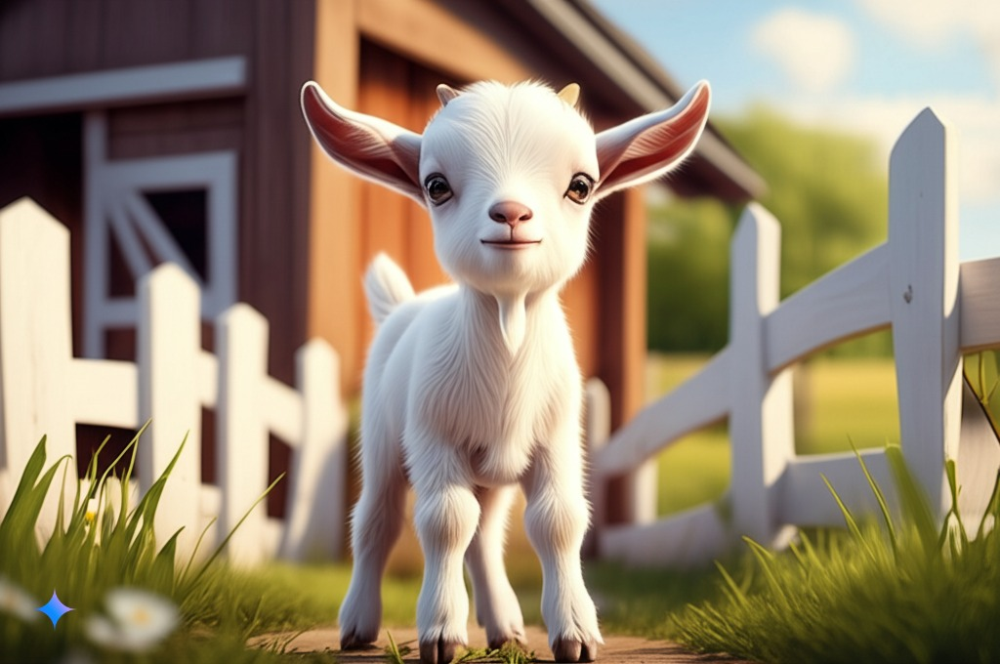

بز کوچولو سفید

بارنابی، بز کوچولوی سفید، روحی کنجکاو داشت. پشمش به سفیدی خامه تازه بود و دم کوچکش با هر دیدن هر منظره جدید، تکان میخورد.
یک صبح آفتابی، در حالی که مادرش مشغول خوردن علف بود، بارنابی چیز جدیدی دید – یک کفشدوزک قرمز روشن که روی یک گل آفتابگردان غولپیکر میخزید.
کفشدوزک از روی گل آفتابگردان پر زد و روی یک گوجه فرنگی آبدار و قرمز در باغچه فرود آمد. بارنابی با احتیاط از میان ردیفهای گیاهان برگدار نوک پا راه رفت.
از باغچه گوجه فرنگی، کفشدوزک به سمت یک نهر جوشان که از میان مزرعه میگذشت، پرواز کرد. بارنابی تا به حال اینقدر به آب نزدیک نشده بود.
ناگهان، یک بارقه زرد روشن چشم بارنابی را گرفت. یک جوجه کرکی نزدیک نهر نوک میزد! کفشدوزک روی پشت جوجه کوچولو پریده بود.
سپس کفشدوزک دوباره پرواز کرد و بر فراز مزرعهای از گندمهای بلند و طلایی به پرواز درآمد. بارنابی به دنبال او دوید، پاهای کوچکش با تمام سرعت حرکت میکردند.
سرانجام، کفشدوزک جلوی درب یک انبار بزرگ با دیوارهای قرمز رنگ فرود آمد، این بزرگترین ساختمانی بود که بارنابی تا به حال از نزدیک دیده بود.
ناگهان، بارنابی یک صدای آشنا شنید: "بَ بَ!" این مادرش بود که داشت دنبالش میگشت.
بارنابی به سمت مادرش دوید، کمی خسته اما بسیار خوشحال بود. او تمام ماجراجویی هایی که در آن روز با کفشدوزک داشت را برای مادرش تعریف کرد.
امیدوارم از داستان بارنابی و کفشدوزک لذت برده باشید!